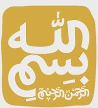

فارسی | English
آرمان سپهر
صفحه شخصی آرمان سپهر
دکتری مهندسی کامپیوتر
تحصیلات
- دکتری مهندسی کامپیوتر | دانشگاه صنعتی شریف
- کارشناس ارشد مهندسی کامپیوتر | دانشگاه صنعتی شریف
- کارشناسی مهندسی کامپیوتر | دانشگاه صنعتی شریف
علاقه مندی پژوهشی
- یادگیری ماشین
- سیستم های توزیع شده
- تحلیل شبکه های اجتماعی
سوابق تدریس
- مدرس درس سیستم عامل | پردیس بین الملل تهران | دانشگاه صنعتی شریف | پاییز 95, بهار 96
- دستیار آموزشی درس یادگیری ماشین | دانشگاه صنعتی شریف
- دستیار آموزشی آزمایشگاه سیستم عامل | دانشگاه صنعتی شریف
- دستیار آموزش داده ساختار | دانشگاه صنعتی شریف
تجربیات کاری
- مدیر پروژه | بیمه پارسیان
- کارشناس ارشد در مرکز سیستم های هوشمند | دانشگاه صنعتی شریف
- مشاور امور فنی در شرکت پرنا
- کارشناس موبایل در شرکت مهیمن
جوایز و افتخارات
- بورس کارآموزی در موسسه مکس پلانک آلمان
- بورس تحصیلی از مرکز تحقیقات مخابرات
- عضو بنیاد ملی نخبگان
- پذیرفته شده در کارشناسی ارشد از سهمیه استعدادهای درخشان